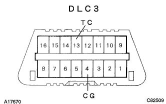
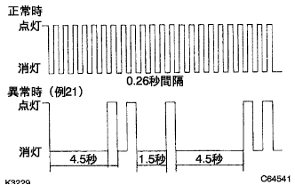

Electronic control type automatotlanthrons Axle [ECT] system (U441E) Diagcode inspection / erasure |
| Step 1 | Confirmation of diagnostic cord with Tascan- |
Use Tascan to perform the operation according to the screen display, display the "TCCS" screen, and select "Diag code".
Select "Confirm Diag Code" on the screen display and check the diag code.
| Step 2 | TASCAN-Freeze Frame Data |
| Step 3 | Diagnostic code memory erasure by Tascan |
Use Tascan to perform the operation according to the screen display, display the "TCCS" screen, and select "Diag code".
Select "Diag & Freeze Data Erase" on the screen display and delete the data.
| Step 4 | Checking engine Warnin Grand lamp diagnostic code confirmation |
|  |
Use the diagnodes check wire No.2 to shorten the DLC3 13 (TC) ← → 4 (CG) terminal.
Turn on the ignitsushi -si -tsuzuchi.
|  |
Read the diagnostic cord (check engine warnin gland lamp number of flashing).
OFF the ignitsui sionsuitsu.
Release between 13 (TC) ← → 4 (CG) of DLC3.
| Step 5 | Checking engine War Ninin Grand lamp Diagnothiscode memory erasure and erasure |
After repairing the abnormalities, remove the EFI fuse in the engine room for more than 10 seconds and connect it again.
Use the diagnodes check wire No.2 to shorten the DLC3 13 (TC) ← → 4 (CG) terminal.
Turn on the ignitsushi -si -tsuzuchi.
Inspect that the normal code is output.